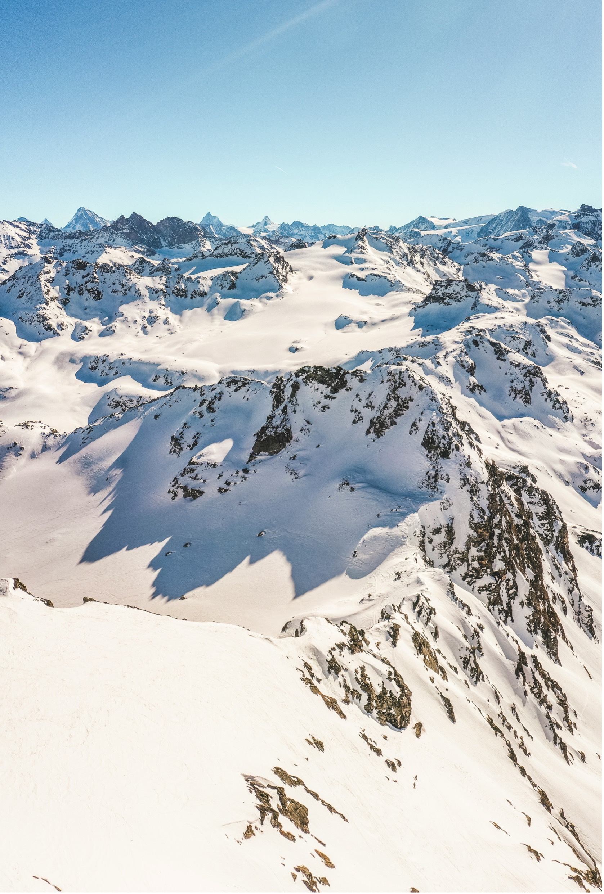
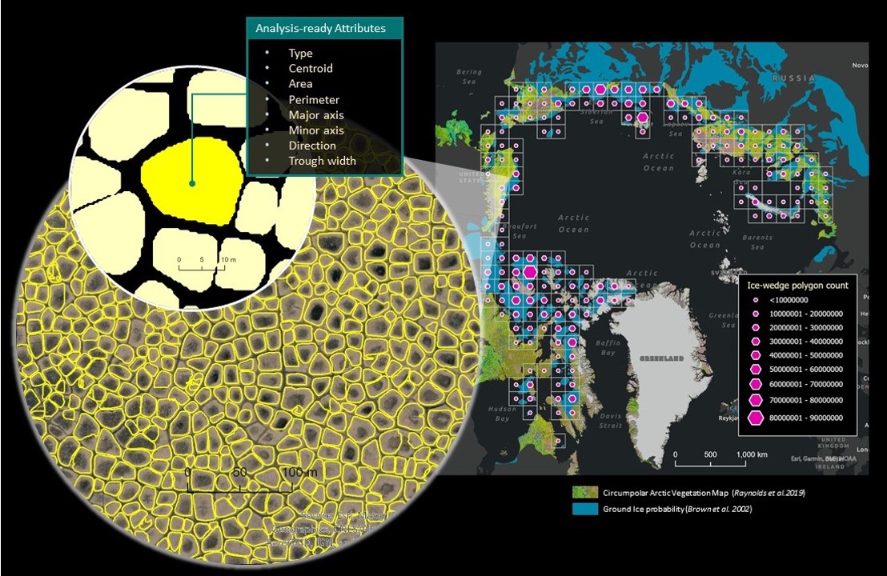
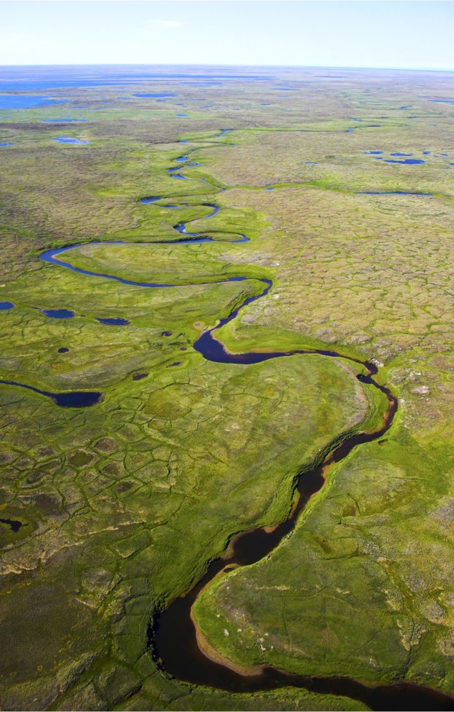
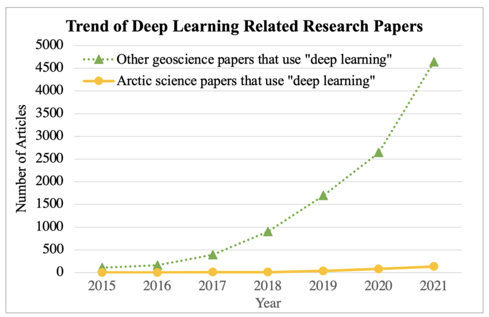
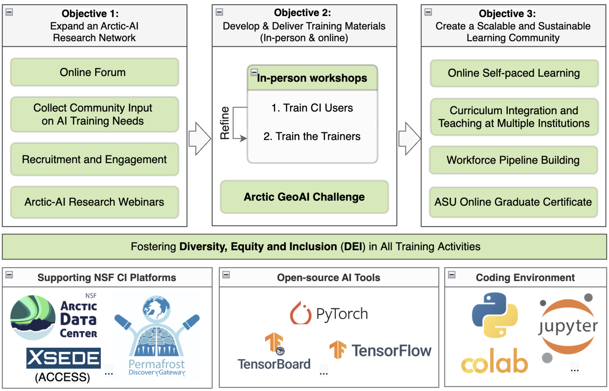

1 Breaking the Ice with AI in Arctic Science
1.1 The changing Arctic
The Arctic is one of the Earth’s remaining frontiers that is critical to the Earth’s climate system. Climate warming and change have pushed the Arctic ecosystem to a tipping point: the frozen is becoming unfrozen with subsequent dramatic impact to its terrestrial and coastal landscapes. Permafrost warming and degradation are documented across the Arctic[1], [2], [3], and are coupled with long-term global warming and extremes in air temperature and precipitation [4], [5], [6]. Further, Arctic sea ice is decreasing rapidly [7], which increases coastal erosion rates across the globe [8]. The Arctic region is remote and is experiencing dramatic changes with local and global implications due to the shift from ice to water: altered soil carbon fluxes [9], changes in vegetation cover [10], shifts in animal behavior [11], and challenges to infrastructure [12]. Accordingly, the transformation of ice to water through degrading permafrost and melting sea and lake ice reverberates through the entire Arctic ecosystem and, therefore, enlists the interest of a broad range of earth, engineering, and social science disciplines [13]. Remote sensing of satellite imagery is an important approach in developing Arctic baseline information, monitoring change, and exploring physical processes [14], [15]. Today, there exist important climatic, geological, biological and sociological data that are yet to be exploited by the Arctic science community. To make the best possible use of these data to address the pressing challenges facing the Arctic environment and Arctic people, the more advanced methods and tools that are available need to be applied. AI-driven analytics, especially those incorporating deep machine learning, can process Arctic big data, automatically detect hidden patterns, and derive new knowledge to enable a new wave of data-driven discovery [16].

1.2 AI for Arctic Challenges
Artificial Intelligence (AI) in its broadest sense describes the focus on computing systems that exhibit forms of intelligence. Multiple approaches towards AI have been identified, including:
- Knowledge Representation and Reasoning to gain a semantic, logical model of a system
- Machine Learning in which statistical models are used for pattern recognition and prediction
- Natural Language Processing for communication in human languages such as English
- Expert Systems using rule-based logical systems for decision-making
- Large Language Models for filtering and generating language
- …
The pursuit of AI as a field has been around since the 1956 with the Dartmouth Workshop, but really took a leap forward in the 2010’s with rising performance of computing hardware and new techniques in machine learning, particularly in the field of deep learning. More recently, AI has entered the public consciousness with the promotion of large language models (LLMs) such as the GPT-3 transformer model and related generative AI systems that are based on foundation models and can quickly generate new outputs [17].

Machine learning (ML) is the subfield of AI concerned with pattern detection using statistical models, which then can be applied to unseen data for prediction and extrapolation without explicit instructions [18]. This mechanistic view of ‘learning’ supports robust evaluation of error and has applications in computer vision, image recognition, speech recognition, text processing and filtering, and many more areas.
Techniques for machine learning are often divided into three types (supervised, unsupervised, and reinforcement learning). These techiques differ based on the feedback provided to the learning system:
- Supervised learning: Training input data are labeled (often manually) by a human, and the algorithm learns by generalizing from these inputs to predict correct outputs
- Unsupervised learning: Without labels, the ML algorithm is designed to detect patterns and structure in the input, often using techniques like gradient descent, clustering, and classification algorithms.
- Reinforcement learning: A ML algorithm learns dynamically from interactive input to solve a problem or learn a goal, where correct responses are rewarded (weighted) higher than less correct responses. Learning then becomes an optimization/hill-climbing problem.
These general approaches all have strengths and weaknesses, and are often used in combination to tackle different aspects of a learning problem.
1.3 Geospatial AI
In this course, we will more narrowly focus on geospatial applications of AI, and particularly on the use of deep learning techniques that employ, for example, convolutional neural networks for feature recognition tasks across massive image datasets such as satellite imagery. As we’ll see during the course, advances in computing hardware, and particularly in available Graphical Processing Unit (GPU) performance have enabled massive growth in the scale of models that can be generated. Today, we can train deep learning models on high-resolution, sub-meter scale satellite imagery (e.g., pan-Arctic, 50cm Maxar imagery), and apply the generated models across the Arctic to better understand change at Arctic scales.
For one example, Witharana et al. [19] trained a convolutional neural network model on Maxar imagery, and used the trained model to detect permafrost ice-wedges across the entire Arctic at sub-meter scale [20], producing a map of over a billion vector features, and the first-ever permafrost map at this scale.


1.4 Welcome and Introductions
Let’s kick the week off with a warm welcome and round of introductions. We’ll start with our Cyber2A project instructors and speakers, and then introduce each of our participants. Everyone is here due to a deep interest in finding solutions to challenges in Arctic science, and everyone is on their own personal journey through data and science. To learn a little about one another, let’s share:
- Name and affiliation
- Your data science background (be brief!)
- One! thing you’d like to get out of the course
1.5 Cyber2A project
Despite the power of these machine learning techniques for Arctic research, the Arctic community has been somewhat delayed compared to other geoscience disciplines in adopting these techniques.

The Cyber2A project aims to build an Arctic learning community to stimulate the use of GeoAI through data science education. This short-course represents a first pass at a survey of relevant AI techniques that would be useful across Arctic regions and disciplines. The goal is to produce an online curriculum and materials that can be used for self-paced learning by Arctic researchers, and can be included in University graduate and undergraduate courses. While there are many online tutorials on machine learning and AI, these materials will specifically target the types of data and challenges typically found in Arctic research, and focus in on the techniques that will make data science learning more approachable.
This course is also a starting point, and not an endpoint. We welcome feedback, suggestions, revisions, and edits to the materials. We want people to adopt, adapt, and revise the materials, and, importantly, contribute those changes back so that others can benefit from these curricular advances. Look for more from Cyber2A as we continue to engage in promoting the use of GeoAI across the Arctic.
